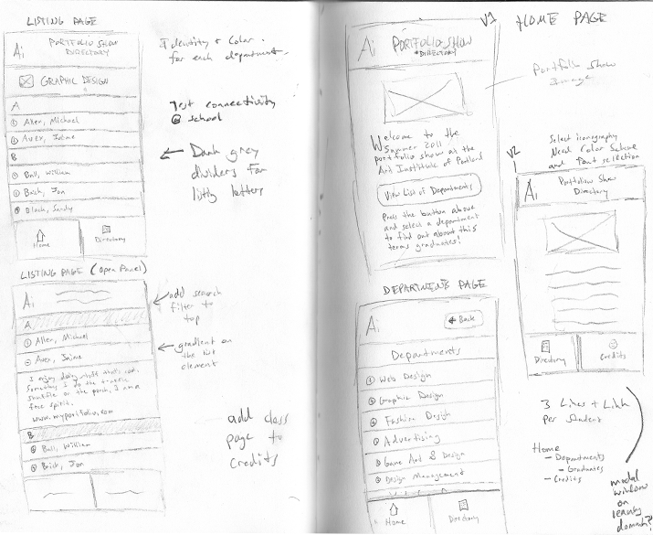
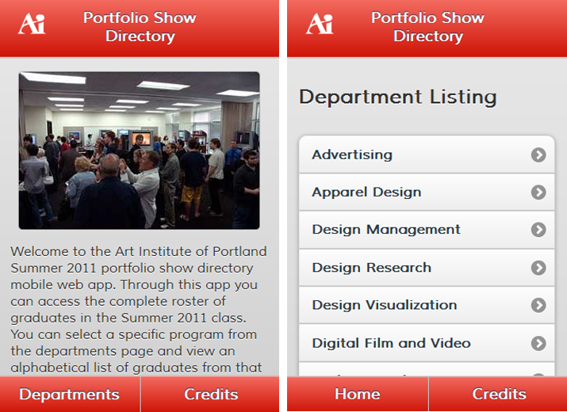
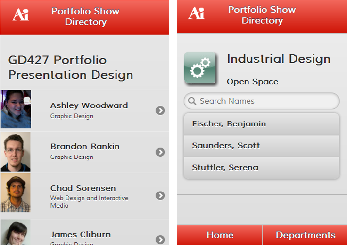

-

I created a mobile web app to assist visitors to the Summer 2011 Portfolio Show. These are some of the early concept sketches drawn up during the design phase.
-

Here you can see how those sketches took life using the jQuery mobile framework.
-

These pages show examples of various list formatting and data heirarchies featured in the mobile web app, you can see them for yourself here.